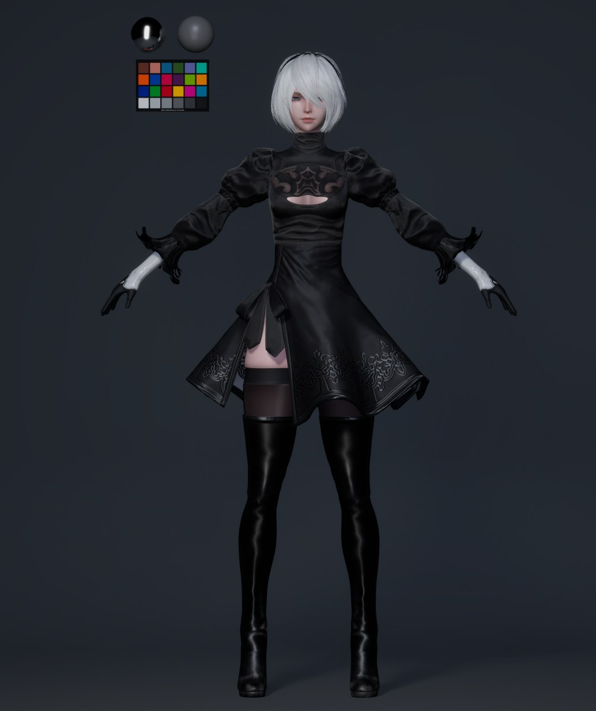

Character Artist · LookDev · Pipeline
Hirakawa
Shion
Shion
Character Artist — Tokyo, Japan
Experience
Aww Inc.
→
QVOU GAMES
→
SpaceData
Characters を見る
About


Software
Maya
ZBrush
Substance Painter
Unreal Engine 5
Photoshop
Wrap3D
Mari
XGen
Pipeline
USD / OpenUSD
MaterialX
OpenPBR
Python
Omniverse
Houdini Solaris
LookDevX
OCIO / ACES
01 — Hero
個人制作 · ファンアート
NieR:
Automata
2B
スカルプト・テクスチャ・リアルタイムパイプラインの技術習熟を目的とした個人制作。造形からLookDevまで一貫して担当。
Scope
Sculpting
Retopo
UV / Bake
Texturing
LookDev
Personal Study · Fan Art · Not for commercial use



02 — Final Render


Cinematic lighting · PBR · UE5 Lumen · ACES CG
03 — Technical Focus

Topology
エッジフロー設計
変形・シルエット・制作読みやすさを意識した顔面トポロジー。

Texture
PBR Material Suite
4096px · Albedo / Normal / Roughness / SSS · ACEScgカラーパイプライン。

LookDev
ライティング検証
Studio / Backlight / Outdoor HDRI / UE5 Lumen でマテリアルレスポンスを確認。
04 — Production Process
スカルプトから最終LookDevまで一貫した制作フロー。各フェーズで品質基準を確認しながら進行。
01 — 03
Sculpt
リファレンス収集、ブロックアウト、ZBrushによるハイポリスカルプト。肌の造形・ハードサーフェスを高解像度で仕上げ。
04
Retopology
ZRemesher + Maya手動クリーンアップ。変形を意識したエッジフロー設計。
05
UV / Bake
モジュラーなシームカット。各種マップをベイク。
06
Texture / LookDev
Substance PainterでPBRテクスチャリング。UE5 + ACEScgで最終検証。
—Work商業制作実績

2019 — 2025 · 商業CG制作
バーチャルヒューマン制作
商業バーチャルヒューマンプロジェクトへのキャラクターアセット制作。大規模商業案件での品質基準・ワークフロー規律・納品要件を習得。
Virtual HumanUnreal EngineLookDevProduction

2025 · ゲームアセット制作
セルルック制作
Unityベース環境でのセルルックキャラクターアセット量産。制作効率・データ管理・最適化・一貫性・納品要件を重視した実務対応。
Cell LookUnityGame AssetProduction

2026 — · デジタルツイン制作
デジタルツイン制作
SpaceDataでのデジタルツインアセット制作とOpenUSDパイプライン検証。DCC間連携、MaterialX、Pythonツールによる制作フロー構築。
Digital TwinOpenUSDMaterialXPython
—Design Study造形探求 · フォームスタディ

造形習作 · Form Study
Eyewear Design Study
ベルニーニのプロセルピナから影響を受けた造形習作。接触・面の変化・力の流れをアイウェアのフォームに応用する試み。
Form StudySculptingShape Exploration
—ResearchLookDev · Color Management · USD · Pipeline
Research Overview
LookDev · USD · Pipeline
Character LookDev / Color Management / USD / MaterialX / OpenPBR / Python Tools — verification archive.
LookDev / Color Management
- Character LookDev
- Skin Rendering / SSS
- Color Management
- ACEScg / OCIO
- Cross-polarized photography
- Unreal Engine presentation
CGWORLD Masterclass Online Vol.15
カラーマネージメントを意識したキャラクタールックデヴのワークフロー
カラーマネージメントを意識したキャラクタールックデヴのワークフロー
USD / MaterialX / Pipeline
- OpenUSD · Variant Sets
- Maya → Houdini → Omniverse
- MaterialX / OpenPBR
- LookDevX
- 参照パス管理
- 共有環境運用
Python Tools / Automation
- Python 自動化
- 命名規則設計
- アセット管理ルール
- パイプライン文書化
- Variant管理ルール
- ワークフロー検証
Verification Summary
DCC間でのVariant Set運用、MaterialX / OpenPBR連携、ACEScgカラーパイプライン、Maya → Houdini → Omniverse間のアセット受け渡しを検証。命名規則・参照パス管理・Pythonツールによる制作フローの再現性を確認。
—Aboutプロフィール · スキル · 連絡先
About
平川詩恩
キャラクターアーティスト。Aww Inc.でのバーチャルヒューマン制作、QVOU GAMESでのセルルックアセット制作を経て、現在はSpaceDataでデジタルツイン制作とOpenUSDパイプライン検証に携わる。
Character ModelingUE5 LookDevPBR TexturingUSD Pipeline
モデリング · スカルプト
テクスチャ · マテリアル
リアルタイム · エンジン
パイプライン · ツール
Experience
Aww Inc.
Character Artist / Virtual Human Production
2019 — 2025
QVOU GAMES
Game Asset Production / Cell Look Character
2025
SpaceData
Digital Twin / OpenUSD Pipeline
2026 —